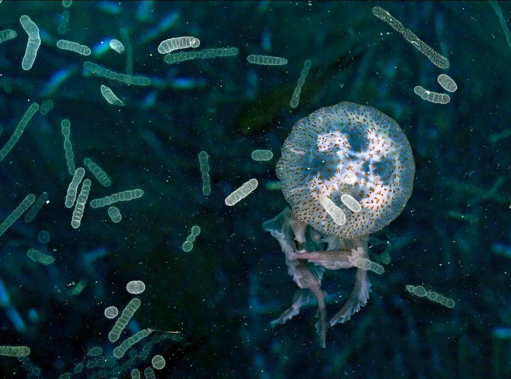
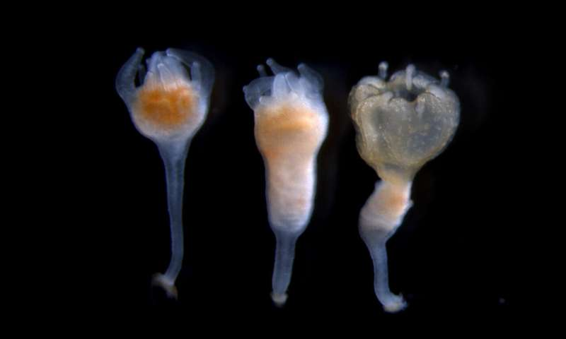

<html>

<head>

  <title>
    The Life Cycle of the Medusa
  </title>

  <link rel="stylesheet" href="style.css" />
  <link href="https://fonts.googleapis.com/css?family=Jomolhari&display=swap" rel="stylesheet">
  <script type='text/javascript' src='http://ajax.googleapis.com/ajax/libs/jquery/1.4.2/jquery.min.js'></script>
  <script src="script3.js"></script>
  <script type='text/javascript'>
    (function() {
      $(document).ready(changePage);

      function changePage() {
        if (sessionStorage.getItem("Medusa") == "visited p.5") {
          $('head').html('<title>The Life Cycle of the Medusa</title>' +

            '<link rel="stylesheet" href="style.css" /><link rel="stylesheet" href="style3.css"/><link href="https://fonts.googleapis.com/css?family=Jomolhari&display=swap" rel="stylesheet">'
          );
          $('body').html('<h2> Poplips and Poplypo Colonies </h2>' +

            '<div class="div3">' +

            '<p2> After making their nest in a sea anemone, like a bird would on a tree, the plana larva attaches itself to a soft surface and transforms into a poplypo, also known as a scyphi, a cylinder shape, stalk-like structure. At the base of the poplypo, there is a mouth opening surrounded by small tentacles that are used to signal to passing animals that it is ready to dance. By doing that, the poplypo draws in animals into its mouth and eats them, and as it grows with each bite it begins to bud new poplips from its trunk, forming a poplypo colony in which the poplips will take over the ocean. When the poplips reach the appropriate size, which takes a few minutes, they begin the next stage in the jellyfish life cycle.' +

            '<div></img></div>' +

            '</p2></div>' +

            '<br><br><br><br><br><br><br><br><br><br><br><br><br><br><br><br>' +

            '<div class="flex-container">' +

            '<div class="div4"><a href="Page6.html"><button> Ephyra and Medusa </button></a></div></div>'

            +
            '<h3> "Green Cursor Trail" by Colin from codepen.io </h3>'
          );

        } else {
          $('head').html('<title>The Life Cycle of the Medusa</title><link rel="stylesheet" href="style.css"/><link href="https://fonts.googleapis.com/css?family=Jomolhari&display=swap" rel="stylesheet">');
          $('body').html('<h2> Polyps and Polyp Colonies </h2>' +

            '<div class="div3">' +

            '<p2> After making their nest on the sea floor, the planula larva attaches itself to a soft surface and transforms into a polyp, also known as a scyphi, a cylinder shape, stalk-like structure. At the base of' +
            ' the polyp is a disc that adheres to the orifice, and at its top is a mouth opening surrounded by small tentacles. The polyp feeds by drawing food into its mouth, and as it grows it begins to bud new polyps from its trunk,' +
            '</img>' +
            ' forming a polyp colony in which the individual polyps are linked together by feeding tubes. When the polyps reach the appropriate size, which can take a few years, they begin the next stage in the jellyfish life cycle.</div>' +

            // '</div>'+

            '</p2></div><br><br><br>' +

            '<div class="div4"><a href="Page5.html"><button> Ephyra and Medusa </button></a></div>'
          );

        }
      }


    })();
  </script>
</head>

<body>
</body>

<!-- <body>

  <h2> Polyps and Polyp Colonies </h2>

  <div class="div3">
    <p2>
      After making their nest on the sea floor, the planula larva attaches itself
      to a soft surface and transforms into a polyp, also known as a scyphi, a
      cylinder shape, stalk-like structure. At the base of the polyp is a disc
      that adheres to the orifice, and at its top is a mouth opening surrounded
      by small tentacles.The polyp feeds by drawing food into its mouth, and as
      it grows it begins to bud new polyps from its trunk, forming a polyp colony
      in which the individual polyps are linked together by feeding tubes. When
      the polyps reach the appropriate size, which can take a few years, they
      begin the next stage in the jellyfish life cycle.
      <div>
        </img>
      </div>

    </p2>

  </div>
  <br>
  <br>
  <br>
  <br>
  <br>
  <br>
  <br>
  <br>
  <br>
  <br>
  <br>
  <br>
  <br>
  <br>
  <br>
  <br>
  <div class="div4">
    <a href="Page5.html"> <button> Ephyra and Medusa </button> </a>
  </div>

<script src="script3.js"></script>
</body> -->

</html>
